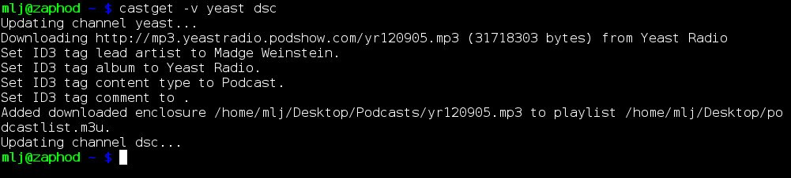

castget
A command-line podcast downloader

castget is a simple, command-line based RSS enclosure downloader. It is primarily intended for automatic, unattended downloading of podcasts.
News
- 10 July 2013: Finally, a new unstable release of castget! Version 1.2.0 is available below. It adds a progress bar, an option to enable curl's connection debugging, as well as a couple of bug fixes (see the ChangeLog for details).
Features
- Simple configuration.
- Per-channel tagging of downloaded MP3 files using ID3v2.
- Per-channel download directories.
- Supports all RSS versions (to the extent this is possible) and Media RSS.
Download
The latest stable release is castget-1.1.0.tar.bz2. The latest unstable release is castget-1.2.0.tar.bz2.
Older releases can be found in the release directory on Savannah.
Pre-built binaries or packages may be available for some operating systems and distributions. The castget maintainers are aware of the following:
Configuration
castget is configured using a configuration file called .castgetrc located in the user's home directory.
The format of this configuration file is very simple: There should be one section for each RSS feed that you want to subscribe to, for example:
[df] url=http://downloads.bbc.co.uk/podcasts/radio4/fooc/rss.xml spool=/home/joe/podcasts
Each such section is referred to as a channel. For each channel you may adjust individual settings by adding key-value-pairs like the the two url and spool settings above.
You may also add a global section specifying overridable defaults that affect all channels:
[*] id3contenttype=Podcast
The source distribution includes a sample configuration file demonstrating all supported settings. See the manual pages castget(1) and castgetrc(5) for details.
Screenshots
The mandatory screenshot:

Dependencies
To build castget you will need
- glib2
- libxml2
- libcurl
- id3lib (optional)
castget has only been tested on Linux, but should work on other UNIX-like systems.
Bugs
Please report any bugs using the project's bug tracker.